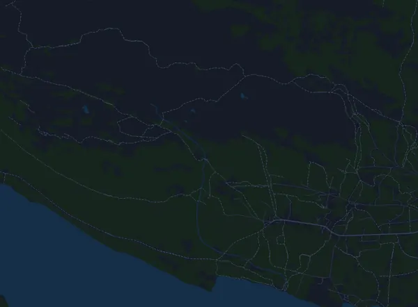

Ottsjö 12K (7 augusti)
- Distans
- 12 km
- Höjdmeter
- ↑ 313 m
- Högsta punkt
- 755 m ö.h.
- Underlag
- Terräng och stig
- Karaktär
- Kuperad
- Start
- kl. 10:30
Höjdprofil
Förbered dig med Mila
Mila är en löpcoach i appen. Lägger du till ett lopp i din plan planerar coachen veckorna fram till start efter din form, och ger dig en tidsprognos och en plan för tempo, vätska och energi på banan.

Rätt pass. Rätt dag.
Banan

Om banan
Ottsjö 12K (7 augusti) är ett terränglopp i Årefjällen, Sverige på 12 km. Banan har 313 höjdmeter uppför och 306 nedför, 26 m per km, och räknas därmed som kuperad. Högsta punkten ligger 755 m ö.h. och den lägsta 511 m ö.h.
Den största klättringen börjar vid km 0,2: 209 höjdmeter på 3,8 km med 5,4 % i snitt, upp till 727 m ö.h. Totalt har banan 2 klättringar på minst 25 höjdmeter; den sista börjar vid km 4,8.
Klättringar
| Börjar vid | Längd | Höjdmeter | Lutning | Topp (m ö.h.) |
|---|---|---|---|---|
| km 0,2 | 3,8 km | 209 m | 5,4 % | 727 |
| km 4,8 | 2,5 km | 47 m | 1,9 % | 755 |
Inför start
Starttider
- kl. 10:30
Startplats
Ottsjö
Tempotabell
Ottsjö 12K (7 augusti) på 1:00:00 – tid per km och mellantider
5:00 per km · km 2,5: 12:30 · km 5: 25:00 · km 7,5: 37:30 · km 10: 50:00 · mål: 1:00:00
Ottsjö 12K (7 augusti) på 1:15:00 – tid per km och mellantider
6:15 per km · km 2,5: 15:38 · km 5: 31:15 · km 7,5: 46:53 · km 10: 1:02:30 · mål: 1:15:00
Ottsjö 12K (7 augusti) på 1:30:00 – tid per km och mellantider
7:30 per km · km 2,5: 18:45 · km 5: 37:30 · km 7,5: 56:15 · km 10: 1:15:00 · mål: 1:30:00
Tiderna förutsätter jämnt tempo hela vägen. Det är ren räkning, ingen prognos: i backar, i trängsel och vid vätskekontroller varierar tempot.
Vanliga frågor
När går Ottsjö 12K (7 augusti)?
Ottsjö 12K (7 augusti) går lördag 7 augusti 2027. Kontrollera datum och starttid hos arrangören.
Vilken tid startar Ottsjö 12K (7 augusti)?
Enligt arrangören: kl. 10:30.
Hur lång är Ottsjö 12K (7 augusti) och hur många höjdmeter är det?
Loppet är 12 km långt med 313 höjdmeter uppför och 306 nedför. Högsta punkten ligger 755 m ö.h.
Hur ser banan på Ottsjö 12K (7 augusti) ut?
Banan räknas som kuperad, med 26 höjdmeter per km i snitt. Den har 2 klättringar på minst 25 höjdmeter; den största börjar vid km 0,2: 209 höjdmeter på 3,8 km. Start och mål ligger på samma plats. Underlaget är terräng och stig.
Hur lägger jag upp farten på Ottsjö 12K (7 augusti)?
Sikta på en jämn ansträngning snarare än ett jämnt tempo: låt farten gå ner i uppförsbackarna, hämta tillbaka den när det planar ut, och håll igen de första kilometrarna. De största klättringarna börjar vid km 0,2 och km 4,8. I Mila får du en tempoplan för just den här banan efter din egen form.
Fler lopp som det här
Fler lopp i närheten
- Kia Fjällmaraton 45K7 augusti 2027 · Årefjällen, Sverige
- Fjällmaraton 100K5 augusti 2027 · Årefjällen, Sverige
- Åre Vertical K 5 km3 augusti 2027 · Årefjällen, Sverige
- Ottsjö 12K (1 augusti)1 augusti 2027 · Årefjällen, Sverige
- 27K1 augusti 2027 · Årefjällen, Sverige
- Minimaraton 1500 m 1,5 km31 juli 2027 · Årefjällen, Sverige
Förbered dig med Mila
Rätt pass. Rätt dag.
Uppgifterna kommer ur banfilen och arrangörens information. Kontrollera datum, starttider och regler hos arrangören.
Mila är inte kopplad till, sponsrad av eller godkänd av arrangören eller loppets sponsorer. Namn och varumärken tillhör sina ägare. Arrangör eller rättighetsinnehavare? Begär ändring eller borttagning